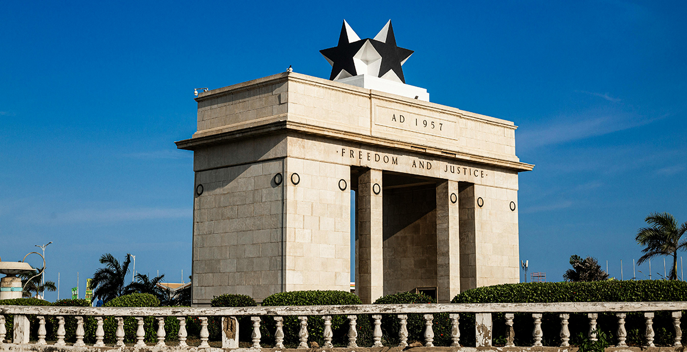
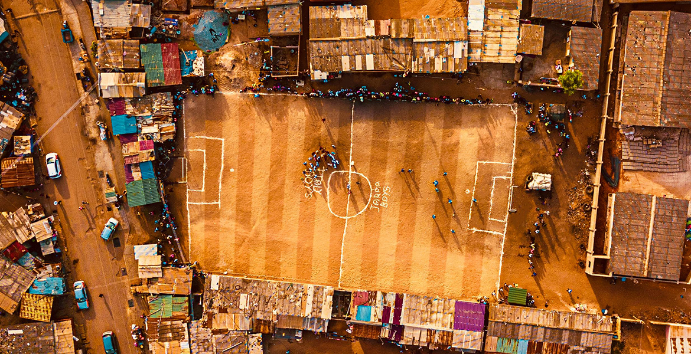
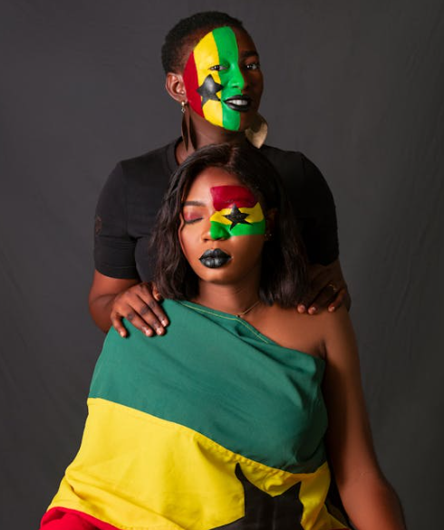

Accra
2,788,380 Resident
Ghana
5°33′N 0°12′W



Get More Information
Accra
View all citiesAccra is the capital of Ghana, on the Atlantic coast of West Africa. Kwame Nkrumah Memorial Park honors Ghana’s first president, who helped lead the country to independence. The park contains Nkrumah’s mausoleum and a museum charting his life. Makola Market is the city’s vast, colorful bazaar. Popular seafront spots Labadi Beach and Kokrobite Beach offer golden sand and high-energy nightlife.
Images Credit
Bandung
Asia Africa
City Network
Quick Link
Get in touch
Need Information?
+62 81318667479
bapperida@bandung.go.id
© BAACN - All rights reserved